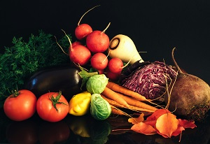

Wild Animals
Wild animals are live in forest most of the times.These are very violent and very scary. In india we see only in zoo and big parks because of the these are rapdily decresing in india. These includes Lion, tiger, cheetha, Elephant, crocodile etc.
Pet Animals
Pet animals are live with people in home. Mainly the reason behind to rising for security purpose and happiness and playing with animals are likely to be friends so pet animals are dogs, cats, horses, goats, birds, cow etc...
Fruits
Fruits are like medicines . See in olden days means 90's every eat fruits and vegetables weekly once or double. Fruits are packed with essential vitamins, minerals, and antioxidants that are vital for maintaining overall health. fruits are reduce immune function, tissue repair, and metabolism.
Birds
Birds are very friendly manner with all the humans mainly parrats are singing. Birds communicate through songs, calls, and visual displays, using these behaviors for courtship, territory defense, and social bonding. Birds in Sparrow, Crow ,Pigeon, Eagle, Owl, Parrot, Woodpecker,
Sea Aimals
hese animals have adapted to a wide range of environments, from shallow coastal waters to the deepest ocean trenches. Sea animals can be broadly categorized into various groups based on their characteristics and habitats. For example, fish are the most abundant group of sea animals, with species ranging from tiny, colorful reef fish to massive predators like sharks and tuna.

Vegetables
Vegetables are an essential part of a healthy diet, providing a wealth of vitamins, minerals, and fiber that contribute to overall well-being. From leafy greens to root vegetables, this diverse group of edible plants offers a wide range of flavors, textures, and culinary possibilities. Vegetables are packed with nutrients such as vitamin C, vitamin K, potassium, and folate, which are crucial for maintaining optimal health and preventing chronic diseases